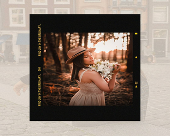
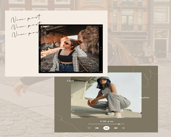

A continuacion te mostramos los mejores editores de fotos para resultados profesionales:
VSCO: Es un lugar donde la expresion es lo más importante. Ofrece herramientas creativas de edicion de fotos y videos, inspiracion y un lugar donde puedas ser tú.
PICSART: Nos permite editar nuestras fotografias con una gran variedad de efectos, filtros, correcciones, crear collages, añadirles pegatinas, textos, dibujar, recortar y mucho mas.
PHOTO LAB: Es un editor de fotos con filtro rápido y efectivo donde se incluyen una cantidad favorable de herramientas con las que se es posible mejorar o perfeccionar la imagen.
LENSA: Es un editor de fotos que te permite retocar las fotos con infinidad de efectos. La aplicación ofrece numerosos filtros para hacer un selfie perfecto, eliminar fondos borrosos o usar cualquier efecto para retocar tus fotos.
PHOTOSCAPE X: Es un potente editor de imagenes gratuito para usarlo en Windows 10 repleto de funciones, este editor cuenta con un visor de imagenes, un editor de las mismas, una herramienta especifica para el recorte
Las siguientes imagenes están editadas con algunos de los editores mencionados:


POSES PARA TUS FOTOS
En los siguientes vídeos te mostramos algunas poses que debes tener en cuenta cuando te tomes tus fotos solas desde la cámara de tu móvil.